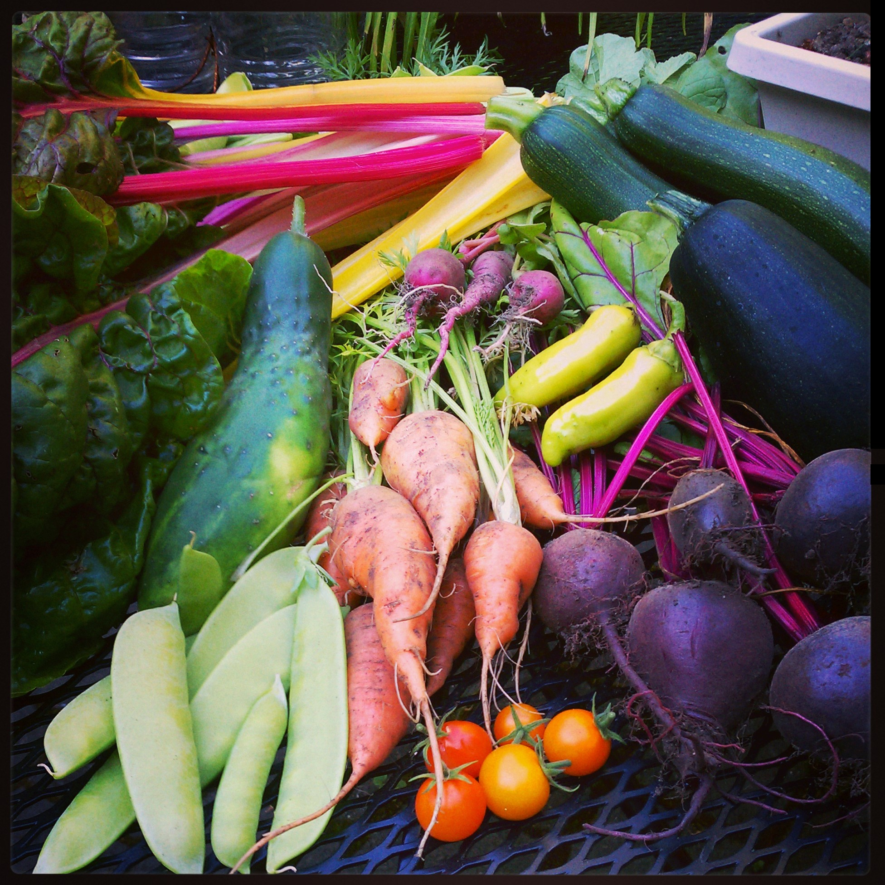

About The Gardens
Surrounded by wildlife, trees and ponds makes our land the best place to grow organic fruit, vegetables, and herbs. We try to have a variety of things growing at most times of the year.
Cute little people help us give the plants plenty of love and care while they are growing. Keeping weeds down and pests away the organic way, by getting dirty.
FRUIT:

- apples
- plums
- grapes
- pears
- kiwi
BERRIES:

- blackberries
- strawberries
- blueberries
- boysenberries
- huckleberries
VEGETABLES:

- lettuces
- kale
- beets
- carrots
- cucumber
- tomatoes
- zucchini
- peas
- and more...
Still working...